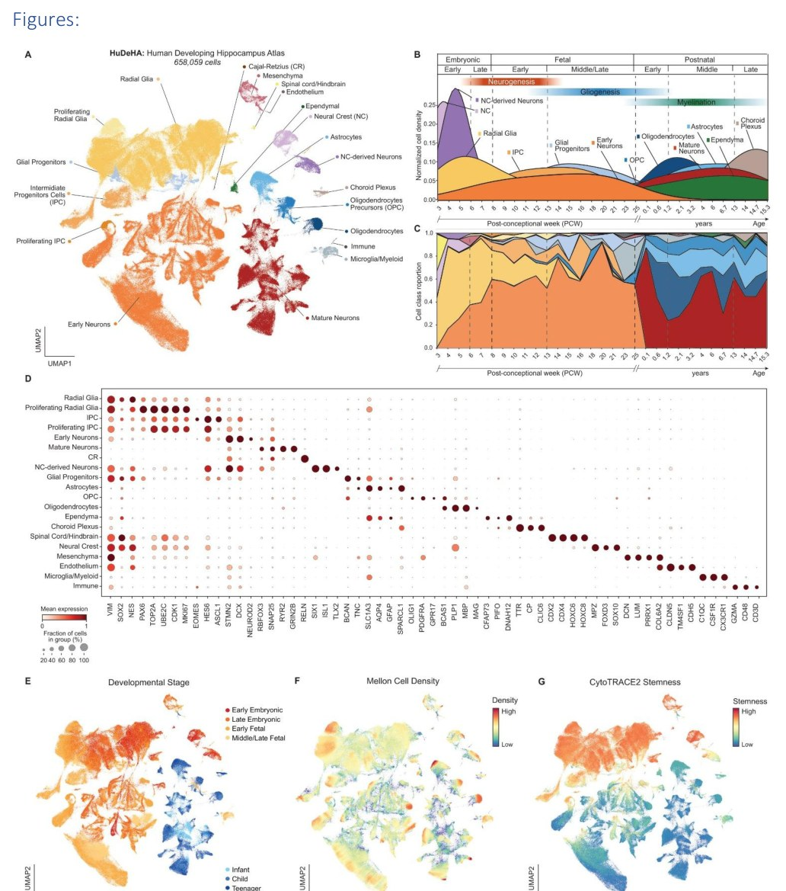
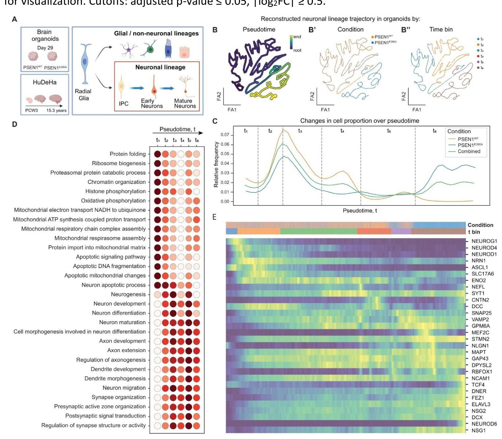
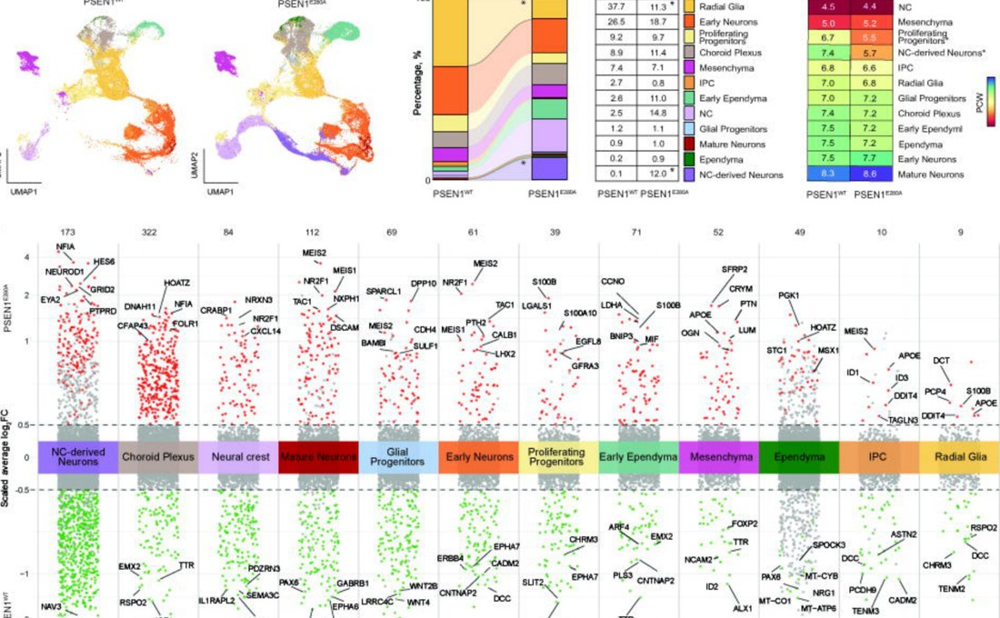

Inson gipokampusining rivojlanish xaritasi va Altsgeymer kasalligi


Olimlar embrion davridan o‘smirlik yoshigacha bo‘lgan davrni qamrab oluvchi inson gipokampusining yagona hujayrali xaritasini yaratishdi. Uning yordamida oilaviy Altsgeymer kasalligini keltirib chiqaruvchi mutatsiyaga ega miya organoidlari o‘rganildi. Tahlillar hujayra tarkibining o‘zgargani va neyronlarning muddatidan oldin yetilganini ko‘rsatdi. Ushbu yangi ma'lumotlar bazasi laboratoriyada nevrologik kasalliklarni aniqroq modellashtirishga yordam beradi.
Maqolaning batafsil tahlili
A lifespan single-cell atlas of the human developing hippocampus benchmarks familial Alzheimer's disease brain organoids
Ushbu kirish bo'limida AQShning nufuzli ilmiy markazlari, jumladan Pitsburg universiteti va Garvard tibbiyot maktabi tadqiqotchilari Petr Baranov rahbarligida ishning mavzusi va mualliflarini taqdim etadilar.
Annotatsiya
Mualliflar APP, PSEN1 va PSEN2 genlaridagi mutatsiyalar sabab bo'ladigan oilaviy Altsgeymer kasalligini o'rganadilar, bunda gippokamp birinchilardan bo'lib zararlanadi. Tadqiqotchilar 3 haftadan 15.3 yoshgacha bo'lgan davrni qamrab oluvchi 658 059 ta hujayradan iborat Inson rivojlanayotgan gippokamp atlasini (HuDeHA) yaratdilar. Ushbu ma'lumotlar bazasi Kolumbiya aholisida uchraydigan PSEN1E280A mutatsiyasiga ega miya organoidlarini baholash uchun ishlatildi. Xaritalash jarayonida radial gliyaning kamaygani, nerv crest'dan kelib chiqqan neyronlarning ko'paygani hamda MEIS2 va TTR oqsili darajasining o'zgargani aniqlandi. Natijalar HuDeHA organoidlarni o'rganishda muhim standart ekanini ko'rsatdi.
Kirish
Bu bo'lim tadqiqotning dolzarbligiga kirish bo'lib, Altsgeymer kasalligining ilk bosqichlarini tushunish uchun yagona transkriptom atlas yaratish zaruriyatini asoslaydi.
Natijalar
Human Developing Hippocampus Atlas (HuDeHA) resolves major cell classes across pre- and postnatal timeline
Mualliflar miya organoidlarini tahlil qilish uchun ishonchli etalon yaratish maqsadida 658 059 ta hujayrani o'z ichiga olgan inson rivojlanayotgan gipokampusi atlasini (HuDeHA) tuzdilar. Ushbu keng qamrovli ma'lumotlar bazasi homilaning 3-haftasidan 16-haftasigacha (PCW3–PCW16) bo'lgan barcha davrlarni, shuningdek, keyingi homila, tug'ilgandan keyingi bosqichlarni va o'smirlik davrini o'z ichiga oladi. Neyron va noreyron liniyalarning kiritilishi hujayra turlari va yetilish traektoriyalarini normal holatda batafsil tavsiflash imkonini berdi.
Bunday atlasning yaratilishi organoidlarni talqin qilishdagi qiyinchiliklarni bartaraf etish uchun zarur edi, chunki organoid hujayralari ko'pincha geterogen va yetilmagan bo'ladi. HuDeHA ni mos yozuvlar xaritasi sifatida ishlatib, tadqiqotchilar PSEN1(E280A) mutatsiyasiga ega organoidlardagi hujayra populyatsiyalarini aniq aniqlashdi va haqiqiy patologik o'zgarishlarni yetishtirish artefaktlaridan ajratib olishdi. Taqqoslash natijalari shuni ko'rsatdiki, mutant organoidlar radial gliyaning kamayishi, nerv crestidan kelib chiqqan neyronlarning ko'payishi va yetilish dasturlaridagi o'ziga xos siljishlar bilan ajralib turadi.
HuDeHA fAD organoidlari ma'lumotlarini etalon asosida xaritalash imkonini beradi
Mualliflar dastlab 107 ta to'plamdagi jami 658 059 ta hujayrani o'z ichiga olgan inson rivojlanayotgan hippokampusi atlasini (HuDeHA) tuzdilar (Rasm 1A; Rasm S1A, B; Jadval S1). Ma'lumotlar homiladorlikning 3-haftasidan boshlab to postnatal o'smirlik davrigacha (15.3 yoshgacha) bo'lgan bosqichlarni qamrab oldi. Ma'lum marker genlar yordamida tadqiqotchilar HuDeHA atlasida 20 ta asosiy hujayra sinfini aniqladilar (Rasm 1D). Neyroektodermal yo'nalishlarga radial gliya, oraliq o'tmishdosh hujayralar, yosh va yetuk neyronlar, shuningdek Kahal-Retsius hujayralari kirdi. Gliya qatoriga gliya o'tmishdoshlari, oligodendrotsit o'tmishdoshlari, yetuk oligodendrotsitlar va astrositlar kiritildi. Shuningdek, ependim hujayralari, xoroid plexus, nerv taroxi populyatsiyalari hamda mezensxima, endoteliy va mikrogliya kabi noektodermal hujayralar aniqlandi.
Homilaning 3-haftasidan boshlab 15.3 yoshgacha bo'lgan davrda hujayralar tarkibining o'zgarishi dinamikasi tahlil qilindi (Rasm 1B, C; Rasm S1D). Erta embrional namunalarda radial gliya va nerv taroxi hujayralari ko'p bo'lsa, keyingi bosqichlarda erta neyronlar ko'payib, gliya o'tmishdoshlari paydo bo'ldi. Postnatal namunalar yetuk neyronlar va differensiallashgan gliyalarga boy edi. CytoTRACE2 algoritmi yordamida rivojlanish salohiyati bahòlanganda, hujayralar yetilishiga qarab salohiyat pasayib borishi aniqlandi (Rasm 1G; Rasm S1C): proliferatsiyalanuvchi o'tmishdoshlarda yuqori bo'lgan ballar yetuk neyronlar va astrositlarda minimal ko'rsatkichlargacha kamaydi.
Stem cell ma'lumotlarini tahlil qilish va hujayralarni annotatsiya qilish
Mualliflar PSEN1 va APOE genlari bo'yicha har xil genotiplarga ega bo'lgan induksiyalangan pluripotent o'zak hujayralaridan (iPSC) olingan miya organoidlari bo'yicha scRNA-seq ma'lumotlar to'plamidan foydalandilar (jami sakkizta hujayra liniyasi). Ma'lumotlarni integratsiya qilish va belgilash uchun tadqiqotchilar HuDeHA ma'lumotlariga asoslangan yarim nazorat ostidagi scPoli neyron tarmoq modelini qo'lladilar (Rasm 2A). Bu yondashuv o'tmishdoshlar, neyronlar, epitelial/ventrikulyar, mezenximal va nerv qirrasi (NC) liniyalarini muvaffaqiyatli aniqlash imkonini berdi (Rasm 2B). Shu bilan birga, differensatsiyalashgan glial, immun yoki qon tomir hujayralari aniqlanmadi.

Neyronlar liniyasida progenitor hujayralar (IPC), shuningdek erta va yetuk neyronlar ajratildi, bunda erta neyronlar (19 131 ta hujayra) va radial gliya (18 384 ta hujayra) ustunlik qildi, IPC (1 308 ta) va yetuk neyronlar (877 ta) esa juda kam uchradi. IPC hujayralari ASCL1 va HES6 markerlarini namoyon etdi, erta neyronlar TUBB3, STMN2 va DCX ni kuchli ekspressiya qildi, yetuk neyronlar esa GRIN2B va GRIA2 ni ifodaladi (Rasm 2C, D). Bundan tashqari, asosan NC kompartmentida kuchli S100B signali kuzatildi (Rasm 2B, C), bu hududda MPZ, FOXD3 va SOX10 markerlari ham aniqlandi (Rasm 2D). Olingan natijalar organoidlarning hujayra tarkibini batafsil tavsiflaydi.
Huayunlash noaniqligini tahlil qilish va maxsus populyatsiyalarni aniqlash
Mualliflar hujayralarni tasniflash modelining ishonchliligini baholadilar; u umumiy jihatdan yuqori natija ko'rsatgan bo'lsa-da, ependima, glial progenitorlar va xorioid chigal uchun yuqoriroq noaniqlikni qayd etdi (Rasm S2A). Muqobil joylashtirish va kanonik markerlardan foydalangan holda, tadqiqotchilar HuDeHA nazorat atlasida to'g'ridan-to'g'ri o'xshashiga ega bo'lmagan, CFAP genlariga (CFAP126, CFAP144, CFAP276, CFAP141, CFAP90) boy bo'lgan alohida hujayra guruhini aniqladilar (Rasm S2B). Ushbu populyatsiya erta ependimal hujayralar sifatida tasniflandi va FOXJ1 ekspressiyasi hamda tsiliogenez dasturining qisman ishga tushishi bilan ajralib turdi, biroq ularda kipriklar yig'ilishining asosiy genlari yetishmas edi [6, 20, 21]. Bu hujayralar shuningdek xorioid chigal markerlari bilan qisman mos keldi, bu organoidlardagi qorinchalar epiteliyasining differentsiatsiyasi to'liq emasligidan dalolat beradi.
Glial progenitorlar va radial gliyaning xarakteristikasi
Glial progenitorlar dorsal o'rta chiziq va tom plitasi markerlari, jumladan LMX1A/B, MSX1 va GDF7 bilan boyiganligini ko'rsatdi (Rasm S2C), shuningdek WNT oilasi genlarining tanlangan ekspressiyasini namoyon etdi (Rasm 2C, Rasm S2C). Shu bilan birga, in vivo glial progenitorlarning klassik markerlari (TNC, BCAN, NFIB) organoidlarda zaif ekspressiya qilindi yoki umuman yo'q edi (Rasm S2D). Radial glia ham bashorat qilish ishonchliligining pasayishini ko'rsatdi (Rasm S2A), bu organoidlardagi holatlarning turlicha ekanligi bilan izohlanadi: SOX2 va NES kabi asosiy markerlar bilan bir qatorda, bu hujayralar glial progenitorlarga xos genlarni ham qisman namoyon etdi.
Organoidlarning etalon atlas bilan transkripsion o'xshashligini baholash
In vivo va organoid hujayralari o'rtasidagi o'xshashlik darajasini mustaqil baholash uchun mualliflar eng ko'p farqlanuvchi 1500 ta gen bo'yicha Jakkard o'xshashligi va Pirson korrelyatsiyasini hisobladilar (Rasm 2E, Rasm S3A-C). Etalon atlas bilan eng yuqori muvofiqlik mezenximal hujayralar (Jakkard indeksi 0.38) va erta neyronlarda (0.32) kuzatildi, bu organoid modelida asosiy neyronal va mezenximal xususiyatlarning saqlanib qolishini tasdiqlaydi. Ko'payuvchi progenitorlar radial glia va ko'payuvchi hujayralar bilan mos keldi (0.32 va 0.29). Erta ependimal populyatsiya barcha referent sinflar bilan bir xilda past o'xshashlikni ko'rsatdi va bu uning organoidga xos ekanligini tasdiqladi. Nazorat populyatsiyalari organoidlar bilan sezilarli o'xshashlik ko'rsatmadi, qo'shimcha tahlillar esa bu qonuniyatlarni to'liq tasdiqladi (Rasm S3D-F).
scPoli yordamida organoidlarning rivojlanish bosqichlarini bashorat qilish
Tadqiqotchilar fAD organoidlari ma'lumotlar to'plamidagi rivojlanish bosqichlari o'xshashligini baholash uchun HuDeHA yosh annotatsiyalariga tayanib scPoli vositasidan foydalandilar. Rasm 2F da ko'rsatilishicha, bashorat qilingan organoid holatlari erta prenatal davrdan tortib postnatal davrgacha bo'lgan oraliqni qamrab olib, yoshga bog'liq mo'tadil tashkil etilishini ko'rsatdi.
Rasm 2G da keltirilgan miqdoriy tahlil natijalariga ko'ra, organoid hujayralarining mutlaq ko'pchiligi erta prenatal muddatlarga (asosan PCW4–PCW9 haftalariga) to'g'ri keldi. Shu bilan birga, atigi 1% ga yaqin hujayralar PCW11 va undan keyingi bosqichlarga, jumladan postnatal yoshga mos kelishi aniqlandi.
Mualliflar har bir hujayra turi uchun yosh guruhlariga to'g'ri keluvchi hujayralar ulushini hisoblab, issiqlik xaritasi shaklida tasvirladilar (Rasm 2H). Olingan taqsimot biologik rivojlanish qonuniyatlariga to'liq mos keldi: o'zak hujayralar va neyron bo'lmagan populyatsiyalar (proliferatsiyalanuvchi O'zak hujayralar, mezenximal va neyron qatlam hujayralari) erta yoshlarga xos bo'lsa, yetuk neyronlar va ependima-simon hujayralar kabi yetukroq turlar kechki va postnatal bosqichlarga mos kelishi bashorat qilindi.
PSEN1E280A organoids display differences in cell-class composition and transcriptional profiles
Ushbu bo‘limda mualliflar PSEN1E280A mutatsiyasi nazorat (PSEN1WT) organoidlariga nisbatan hujayra tarkibi va genlar ekspressiyasiga qanday ta'sir qilishini tekshirdilar. Hujayra turlarining nisbatlarini aniqlash uchun bayes yondashuviga asoslangan scCODA usuli qo‘llanildi (Rasm 3A-B). Tahlil natijasida mutant organoidlarda asab tizimi crest hujayralaridan kelib chiqqan neyronlar (NC-derived neurons) soni ishonchli oshgani, radial gliya hujayralari esa kamaygani aniqlandi. Bu hujayra holatining o‘zgarganidan dalolat beradi.

Shuningdek, tadqiqotchilar har bir hujayra sinfi uchun taxminiy biologik yoshni baholadilar (Rasm 3C). Cliff’s delta ko‘rsatkichi yordamida o‘tkazilgan tahlil shuni ko‘rsatdiki, mutant organoidlardagi ko‘payuvchi o‘tmishdoshlar va NC-neyronlar nazoratga qaraganda «yoshroq» xususiyatga ega (mos ravishda 5.5 va 6.7 hafta). Differensial ekspressiya tahlili eng ko‘p o‘zgarishlar NC hujayralari, neyronlar va xoroid chig‘anog‘ida kuzatilganini ko‘rsatdi (Rasm 3D). Xususan, yetuk va erta neyronlarda MEIS2, MEIS1, NR2F1 va TAC1 genlari oshgani, shuningdek HES6, NEUROD1 va NFIA kabi neyrogenez regulyatorlari faollashgani aniqlandi. Ko‘payuvchi hujayralarda S100B va APOE darajasi oshib, WNT yo‘li bilan bog‘liq genlar kamaydi. Xoroid chig‘anog‘ida TTR va mitoxondrial transkriptlar pasayib, FOLR1 va MSX1 ortgani qayd etildi (S2-jadval).
Nihoyat, mualliflar signal yo‘llarining boyishini mutant va nazorat organoidlari o‘rtasida, shuningdek HuDeHA mos yozuvlar hujayralari bilan taqqosladilar (Rasm S4A-B). Eng yaqqol farqlar ko‘payuvchi o‘tmishdoshlarda kuzatildi, bunda mutantlarda WNT yo‘liga oid ko‘rsatkichlar pastroq bo‘lib chiqdi.
Neuronal trajectory analysis reveals altered maturation dynamics
Ushbu kichik bo‘lim sarlavhasi keyingi tadqiqot bosqichiga kirish bo‘lib xizmat qiladi, unda mualliflar mutatsiya sharoitida yetilish dinamikasini batafsil o‘rganish uchun neyronlarning rivojlanish traektoriyalarini tahlil qiladilar.
Neuronal lineage and pseudotime analysis
Tadqiqotchilar in vivo mos yozuv sifatida HuDeHA ma'lumotlaridan foydalangan holda oraliq ajdod hujayralari (IPC), erta va yetuk neyronlar bo'ylab soxta vaqt (pseudotime) traektoriyasini tuzdilar va uni kuchga asoslangan embeding yordamida vizualizatsiya qildilar (Rasm 4A, B). Tahlil natijalariga ko'ra, soxta vaqtning boshlang'ich bosqichlarida neyrogen taqdirni belgilovchi transkripsiya omillari (NEUROG1, ASCL1, NEUROD1, NEUROD4) ustunlik qilgan bo'lsa, keyingi bosqichlarda neyron tuzilishi va sinaptik funksiyalarga mas'ul genlar (MAPT, SNAP25, SYT1, VAMP2, NLGN1) faollashgan (Rasm 4E, Rasm S5). Traektoriya oltita qismga bo'linganda, hujayra dasturlarining almashinuvi aniqlandi: boshida biosintez va metabolizm ustun kelsa, oxirida neyronlar differensiallanishi va sinaps tashkil topishi kuchaygan (Rasm 4D). Apoptoz bilan bog'liq genlar oxirida emas, balki boshida to'plangani kuzatildi. Genotiplarni taqqoslash shuni ko'rsatdiki, PSEN1WT hujayralari erta-o'rta bosqichlarda to'plangan bo'lsa, PSEN1E280A mutant hujayralari kechroq soxta vaqt bosqichlarida ko'proq namoyon bo'lib, yetukroq holatlarga siljiganligini ko'rsatdi (Rasm 4B′, C).


In vivo comparison and Discussion
Mualliflar HuDeHA ma'lumotlari asosida in vivo traektoriyasini qayta tikladilar va u organoidlardagidek oxirgi bosqichda hujayralarning haddan tashqari ko'payishini ko'rsatmadi (Rasm S6A–D). Pearson korrelyatsiyasi yordamida olib borilgan taqqoslash barcha organoid genotiplari in vivo traektoriyasiga nisbatan asosan erta bosqichlarga (t1–t2) yaqin ekanligini ko'rsatdi (Rasm S6E). Shunga qaramay, PSEN1E280A organoidlari kechroq soxta vaqtda HuDeHA'ning o'rta t3 bosqichiga biroz yuqoriroq o'xshashlikni ko'rsatdi. "Muhokama" (Discussion) bo'limida mualliflar ushbu natijalarni umumlashtirib, PSEN1E280A mutatsiyasining neyronlar differensiallanishiga ta'sirini tahlil qiladilar.
Reference mapping identifies divergent and organoid-specific populations
Mualliflar HuDeHA atlasidan foydalangan holda PSEN1E280A mutatsiyasiga ega miya organoidlari hujayralarini xaritalashdi. Tahlillar shuni ko'rsatdiki, bu organoidlar asosan erta embrional rivojlanish bosqichini (taxminan 5-9 homila xaftasi, PCW) takrorlaydi, bu ushbu differensiatsiya bosqichidagi maqsadli bo'lmagan miya organoidlarining o'zak hujayra tarkibiga mos keladi. Organoidlarda yaqqol neyron liniyasi, shuningdek, neyron tizma o'xshash va mezenximal qismlar aniqlandi, ammo yetuk glial populyatsiyalar topilmadi. Neyron tizma hujayralarining mavjudligi mutatsiya natijasi emas, balki protokoldagi noneyron holatlarning xarakterli kengayishi bilan izohlanadi.
Neyron liniyasida radial glia va erta neyronlar ustunlik qildi, oraliq o'zak hujayralar va yetuk neyronlar esa kamchilikni tashkil etdi. HuDeHA etaloniga qiyoslaganda, xoroid pleksus va ependimal o'xshash populyatsiyalar in vivo holatiga cheklangan darajada o'xshashligi aniqlandi, bu organoidlardagi ventrikulyar hujayralarning yetilmaganligini bildiradi. Shuningdek, HuDeHAda to'g'ridan-to'g'ri o'xshashiga ega bo'lmagan,tsiliogenez dasturi qisman faollashgan yetuk bo'lmagan qorincha epiteliy populyatsiyasi topildi. Glial o'zak hujayralarga o'xshash populyatsiya tom qismi (roof plate) va kortikal gem markerlarini namoyon etib, bu haqiqiy glia emas, balki kortikal gemga yaqin signal holatini anglatishini ko'rsatdi.
Tarkibiy tahlil va hujayra muvozanati
Mualliflar PSEN1E280A mutatsiyasi organoidlardagi hujayra liniyalari taqsimotiga qanday ta'sir qilishini aniqlash uchun tarkibiy tahlil o'tkazdilar. Tahlil natijasida radial gliya hujayralari kamaygani va nerv nishoni populyatsiyasi oshgani aniqlanib, hujayra muvozanati buzilganligi ko'rsatildi.
Bunday o'zgarishlar o'tmishdosh hujayralar xatti-harakati o'zgarganidan dalolat beradi: ular radial gliyani saqlab qolishga qiynaladi va neyronlarga tezroq differentsiatsiyalanadi. Nerv nishoni hujayralari soni differentsiatsiya usuliga ham bog'liq bo'lishi mumkinligi sababli, tadqiqotchilar bu o'sishni mutatsiyaning bevosita oqibatidan ko'ra, u bilan bog'liqlik sifatida talqin qilishadi. Umuman olganda, ushbu natijalar ilk rivojlanish signallari buzilganda hujayra liniyalarini tanlash jarayoni o'zgarishi haqidagi g'oyani tasdiqlaydi [28].
Neuronal trajectory analysis uncoversaltered developmental progression
Ushbu bo'limda mualliflar PSEN1E280A mutatsiyasi hujayra differentsiatsiyasiga qanday ta'sir qilishini tushunish uchun neyronlarning rivojlanish traektoriyalarini o'rganishdi. Tahlillar shuni ko'rsatdiki, mutant organoidlar hujayra taqdirini belgilash, progenitor dasturlar va qorincha epiteliyasi tuzilmalariga ta'sir qiluvchi transkripsiya faolligidagi jiddiy o'zgarishlarni boshdan kechiradi. Xususan, MEIS2, MEIS1, NR2F1 va TAC1 omillari ekspressiyasining turg'un o'sishi kuzatildi, bu hududiy naqshlar o'zgarganidan dalolat beradi. Radial gliya hujayralari S100B va APOE darajasining oshishini ko'rsatdi, bu yetuk populyatsiyalar paydo bo'lishidan oldin ham glialarning patologik jarayonlarga erta qo'shilishini aks ettiradi.
Olimlar HES6 va NEUROD1 ekspressiyasining kuchayishi orqali erta neyrogen dasturlarning faollashishini qayd etdilar, ammo bu yetuk yetilishdan ko'ra yetuk bo'lmagan differentsiatsiyalangan holatning cho'zilib ketishidan dalolat beradi. Xoroid chigaliga bog'liq populyatsiyalarda beta-amiloidni bog'lash uchun muhim oqsil bo'lgan transtiretin (TTR) darajasining sezilarli darajada pasayishi aniqlandi. Bu Altsgeymer kasalligi patogeneziga xos bo'lgan sekretor funksiyaning buzilishi va Aβ klirensining erta nuqsonlarini ko'rsatishi mumkin.
Signal yo'llarini taqqoslash progenitorlarda Notch faolligining o'rtacha pasayishini ko'rsatdi, WNT yo'llarining bostirilishi esa radial gliya hujayralarining yo'qolishi va neyronlarning yetilishidagi siljishning ehtimoliy sababi sifatida ko'rildi. Xaritalash yordamida hujayralarning biologik yoshini baholash organoidlarning homiladorlikning 5-9 haftalariga (birinchi trimestr) mos kelishini ko'rsatdi. Shu bilan birga, mutant namunalar yovvoyi tipga nisbatan progenitorlar va neyronlar uchun yoshroq yoshga qarab biroz siljishni ko'rsatdi.
Cheklovlar
Ushbu tadqiqotda bir qator cheklovlar mavjud. Organoidlarning ma'lumotlar to'plamida faqat ikkita PSEN1WT va oltita PSEN1E280A organoidlari mavjud bo'lib, ular bitta nashr etilgan tadqiqotdan olingan. Bu statistik quvvatni pasaytiradi va mutatsiya ta'sirini organoidlar orasidagi o'zgaruvchanlikdan farqlashni qiyinlashtiradi. Shuningdek, asab crestiga o'xshash hujayralar populyatsiyasining ortishi to'g'ridan-to'g'ri PSEN1E280A oqibatidan ko'ra, qisman protokolga bog'liq ketma-ketlik xususiyatlarini aks ettirishi mumkin.
Metodlar
HuDeHA yig'ish uchun ma'lumotlarni yig'ish va oldindan qayta ishlash
Ma'lumotlarni yig'ish
Mualliflar miya organoidlari hujayra holatlarini solishtirish hamda ularni in vivo rivojlanish jarayonlari bilan qiyoslash uchun asos bo'ladigan HuDeHA ma'lumotlar bazasini shakllantirish uchun zarur bo'lgan boshlang'ich ma'lumotlarni yig'ish bosqichini bayon qilishdi.


Tadqiqot sxemasi
Preprint hali taqriz qilinmagan. Xulosalar dastlabki.
Manba
| Kategoriya | Preprint litsenziyasi |
|---|---|
| neuroscience | — |
Manbalar
| Manba | Havola |
|---|---|
| DOI | doi.org |